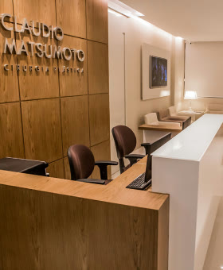
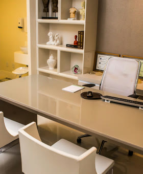

Cirurgião plástico · CRM-BA 14314 · RQE 6888
Cirurgia plástica dedicada às mamas.
O Dr. Cláudio Matsumoto concentra sua atuação na cirurgia plástica das mamas: prótese de silicone, mastopexia e mamoplastia, com a técnica definida para cada paciente.

Por onde começar
O que você gostaria de mudar?
Quero mais volume, com proporção
Como a prótese é escolhida e como a técnica estruturada ajuda a manter o formato.
Prótese de siliconeMastopexiaMinhas mamas caíram ou perderam volume
A suspensão das mamas, em geral combinada com prótese, e as cicatrizes em L.
MastopexiaReduçãoMinhas mamas pesam e incomodam
Postura, roupas e exercícios: por que a redução é também uma cirurgia funcional.
Mamoplastia redutoraNova cirurgiaJá operei e quero rever
Troca de prótese, nova suspensão ou redução em mamas já operadas.
Mamoplastia secundáriaTécnicas
Cada mama pede uma técnica. O plano é feito para você.
A indicação é definida em consulta, depois da avaliação do tórax, da pele e do que a paciente deseja. Estas são as técnicas que fazem parte da rotina do Dr. Cláudio.
Prótese de silicone 01
Além da estética, considera a manutenção do formato da mama ao longo do tempo.
Fios especiais reforçam a parte inferior da mama, como o aro de um sutiã.
Prótese com enxerto de gordura da própria paciente para refinar o colo.
Mastopexia 02
Para mamas com flacidez, pele flácida e aréolas caídas, frequentemente com prótese.
Suspensão com tratamento das camadas da mama e cicatrizes em L ou mini-L.
Uma faixa de músculo lateral reforça a sustentação da prótese.
Mamoplastia 03
Para mamas pesadas e desproporcionais, que afetam a postura, as roupas e os exercícios.
Para quem já fez cirurgia de mama e precisa de uma nova intervenção.
Técnica estruturada
Uma estrutura interna para manter o formato por mais tempo.
“Atualmente, não buscamos apenas resultados esteticamente bonitos. Também consideramos a manutenção do formato ao longo do tempo.”
Dr. Cláudio Matsumoto
- Dual planeA prótese fica parte sob o músculo, parte sob a glândula.
- Dual plane customizadoUma variação do dual plane, definida caso a caso.
- Alça muscularUma faixa de músculo reforça a sustentação.
- Sutiã internoFios especiais reforçam a parte inferior da mama.
- Suporte muscular lateralAjuda a evitar que a prótese se desloque para os lados.
Segurança e recuperação
Método em cada passo, conforto depois.
Os 14 pontos
Um protocolo de cuidados durante a cirurgia de prótese, identificado em estudos científicos para reduzir complicações. “Este é o método de trabalho que utilizo”, diz o Dr. Cláudio.
Conhecer o protocolo R24RTécnica de recuperação rápida
Técnicas e materiais que buscam uma recuperação mais confortável: no aumento com prótese, escovar os dentes, comer e pentear os cabelos já são atividades liberadas.
Como é a recuperaçãoSua cirurgia
Da primeira conversa ao acompanhamento.
- 01AgendamentoConsulta presencial em Salvador ou online.
- 02ConsultaDúvidas, expectativas e o planejamento da sua cirurgia, com os exames necessários.
- 03CirurgiaCom os exames avaliados, em um dos hospitais de referência de Salvador.
- 04AcompanhamentoIndividualizado, com apoio de enfermeiras especializadas em cirurgia plástica.
- 05Incisões discretasIncisões mínimas, em locais estratégicos, com as técnicas mais atuais.
A clínica
“Idealizei a clínica como um espaço aconchegante, para que minhas clientes pudessem ter a sensação de bem-estar e tranquilidade em todos os momentos: antes, durante e depois das cirurgias.”
Dr. Cláudio Matsumoto, sobre a clínica no Caminho das Árvores


Quem é
Dr. Cláudio Matsumoto
“Hoje, concentro minha atuação nesta área apaixonante: as mamas.”
Formado em Medicina pela UFBA em 1999, começou na cirurgia geral e se especializou em cirurgia plástica no Hospital dos Servidores do Estado do Rio de Janeiro. Aperfeiçoou-se na Clínica Ivo Pitanguy, no Hospital Santa Cruz e na Clínica Raul Gonzales, e voltou a Salvador em 2007.
- SBCPMembro especialista e titular
- ISAPSInternational Society of Aesthetic Plastic Surgery
- BAPSBrazilian Association of Plastic Surgeons
- 4.500+cirurgias de mama realizadas
No YouTube
Ele explica cada técnica.
São 179 vídeos no canal do Dr. Cláudio, com 7,15 mil inscritos, sobre silicone, mastopexia, redução e recuperação.
Avaliações no Google
O que as pacientes contam.
139 avaliações públicas
no Google
Desde a primeira consulta, me senti acolhida, ouviu minhas expectativas com atenção e transmitiu muita segurança. No pós-operatório, o acompanhamento também tem sido cuidadoso e atencioso.
Muito pontual, extremamente atencioso, passa uma confiança surreal quando está explicando cada procedimento, tipo de prótese, método da cirurgia. Você se sente acolhido de verdade!
Um cirurgião extremamente competente, criterioso e cuidadoso em cada detalhe. Sua abordagem é sempre segura, ética e baseada em excelência técnica.
Além de extremamente técnico, ele foi atencioso comigo em todo o processo. E, junto com ele, vem todo um conjunto: o consultório, a equipe de atendimento, o hospital, o anestesista, as massagistas… todos muito atenciosos.
Para além da sua competência técnica, ele é atento aos detalhes, humano e cuidadoso com a segurança e o bem-estar dos seus pacientes.
Desde a primeira consulta fui muito bem acolhida, orientada com clareza e segurança, e esse cuidado continua até hoje. Cheguei até o Dr. Cláudio por indicação de amigos.
Desde a primeira consulta, ele me passou muita confiança, demonstrando muito conhecimento. […] Sempre esteve disponível para esclarecer minhas dúvidas e me deixou muito tranquila durante todo o processo.
Excelente profissional, muito atencioso, dedicado, educado, paciente, me senti muito segura com ele.
Contato
Caminho das Árvores, Salvador.
Av. Antônio Carlos Magalhães, 3244 · salas 1018/1019Edifício Thomé de Souza · Caminho das Árvores · Salvador · BA
Dúvidas frequentes
Antes da consulta
Como são escolhidos o modelo e o volume da prótese?
Em consulta, depois de uma avaliação personalizada. O volume deve respeitar os limites da mama, o chamado footprint, e volumes desproporcionais ou exagerados devem ser evitados.
Vou ter uma grande cicatriz?
Toda cirurgia deixa cicatriz. O Dr. Cláudio busca incisões mínimas em locais estratégicos. Na mastopexia multiplanos, por exemplo, as cicatrizes ficam em L ou em mini-L, conforme o caso.
Moro em outra cidade. Como faço para operar com o Dr. Cláudio?
A primeira consulta pode ser online. A equipe orienta pelo WhatsApp sobre exames, datas e o acompanhamento.
Quais os riscos de operar as mamas?
Como qualquer cirurgia, as cirurgias das mamas podem ter complicações. Os riscos do seu caso são explicados em consulta, e o protocolo dos 14 pontos é seguido para reduzi-los.
A prótese atrapalha a mamografia?
Não. As próteses não impedem exames como ultrassonografia ou mamografia, nem a detecção de doenças mamárias.
Agende sua consulta com o Dr. Cláudio Matsumoto.
No consultório, no Caminho das Árvores, ou online.